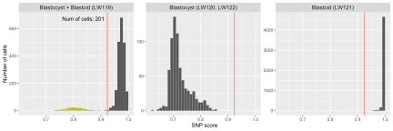
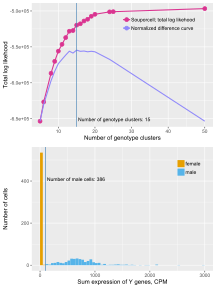
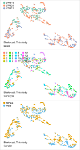

![]()
Sys.time()[1] "2023-07-21 20:39:31 CST"Sys.time()[1] "2023-07-21 20:39:31 CST"[1] "Asia/Shanghai"PROJECT_DIR <- "/Users/jialei/Dropbox/Data/Projects/UTSW/Peri-implantation"Load required packages.
library(tidyverse)
## ── Attaching core tidyverse packages ─────────────────── tidyverse 2.0.0.9000 ──
## ✔ dplyr 1.1.2.9000 ✔ readr 2.1.4.9000
## ✔ forcats 1.0.0.9000 ✔ stringr 1.5.0.9000
## ✔ ggplot2 3.4.2.9000 ✔ tibble 3.2.1.9005
## ✔ lubridate 1.9.2.9000 ✔ tidyr 1.3.0.9000
## ✔ purrr 1.0.1.9000
## ── Conflicts ────────────────────────────────────────── tidyverse_conflicts() ──
## ✖ dplyr::filter() masks stats::filter()
## ✖ dplyr::lag() masks stats::lag()
## ℹ Use the conflicted package (<http://conflicted.r-lib.org/>) to force all conflicts to become errors
library(Matrix)
##
## Attaching package: 'Matrix'
##
## The following objects are masked from 'package:tidyr':
##
## expand, pack, unpack
library(patchwork)
library(extrafont)
## Registering fonts with R
library(furrr)
## Loading required package: futureget_mode <- function(v, exclude_zero = FALSE) {
if (exclude_zero) {
v <- v[v != 0]
}
uniqv <- unique(v)
uniqv[which.max(tabulate(match(v, uniqv)))]
}
normalize <- function(x) {
return((x - min(x)) / (max(x) - min(x)))
}
add_panel_border <- function() {
ggplot2::theme(
plot.background = element_rect(
color = "grey70", fill = NA, linewidth = 0.25
)
)
}
score_snps <- function(m, cells, snp_concensus) {
furrr::future_map(c(cells), \(x) {
selected_cell <- x
snps_for_testing <- rownames(
m
)[m[, selected_cell] != 0]
snps_for_testing <- snps_for_testing[
snps_for_testing %in% names(snp_concensus)
]
# cat(length(snps_for_testing), "\n")
data.frame(
cell = selected_cell,
score = mean(
m[
snps_for_testing,
selected_cell
] == snp_concensus[snps_for_testing]
),
num_snps = length(snps_for_testing)
)
}) |>
dplyr::bind_rows() |>
dplyr::mutate(batch = stringr::str_remove(cell, "_[A-Z]{16}$"))
}`%+replace%` <- ggplot2::`%+replace%`
`%<-%` <- zeallot::`%<-%`reticulate::py_config()python: /Users/jialei/.pyenv/shims/python
libpython: /Users/jialei/.pyenv/versions/mambaforge-22.9.0-3/lib/libpython3.10.dylib
pythonhome: /Users/jialei/.pyenv/versions/mambaforge-22.9.0-3:/Users/jialei/.pyenv/versions/mambaforge-22.9.0-3
version: 3.10.9 | packaged by conda-forge | (main, Feb 2 2023, 20:26:08) [Clang 14.0.6 ]
numpy: /Users/jialei/.pyenv/versions/mambaforge-22.9.0-3/lib/python3.10/site-packages/numpy
numpy_version: 1.24.3
anndata: /Users/jialei/.pyenv/versions/mambaforge-22.9.0-3/lib/python3.10/site-packages/anndata
NOTE: Python version was forced by RETICULATE_PYTHONVARTRIX_VCF <- "vartrix_LW121"
VARTRIX_MATRIX_DIR <- "no-duplicates_umi_mapq10_consensus"
matrix_snp <- purrr::map(c("LW119", "LW120", "LW121", "LW122"), \(x) {
read_snp_matrix(
matrix_dir = file.path(
PROJECT_DIR, "genotyping", x,
VARTRIX_VCF, VARTRIX_MATRIX_DIR
)
)
}) |>
purrr::reduce(cbind)
matrix_snp |> dim()[1] 192277 8088VARTRIX_PALETTE <- c(
"vartrix_LW121" = "#BCBD22FF",
"vartrix_1000genomes_AF1e-1" = "#17BECFFF"
)cell_metadata_snp <- Matrix::colSums(matrix_snp) |>
tibble::enframe(name = "cell", value = "num_umis") |>
dplyr::mutate(
batch = stringr::str_remove(
string = cell,
pattern = "_[A-Z]{16}"
)
)
cell_metadata_snp |> head()# A tibble: 6 × 3
cell num_umis batch
<chr> <dbl> <chr>
1 LW119_AAACGCTAGGGAGGCA 342 LW119
2 LW119_AAACGCTCAGCTGGTC 330 LW119
3 LW119_AAACGCTTCAGTCAGT 1065 LW119
4 LW119_AAAGAACAGGCTCAAG 988 LW119
5 LW119_AAAGAACCAGCTGAGA 756 LW119
6 LW119_AAAGAACCATTAAAGG 877 LW119adata_files <- purrr::map(c("LW119", "LW120", "LW121", "LW122"), \(x) {
file.path(
PROJECT_DIR,
"raw",
x,
"matrix",
"adata.h5ad"
)
})
purrr::map_lgl(adata_files, file.exists)[1] TRUE TRUE TRUE TRUEBACKED <- NULL
matrix_readcount_use <- purrr::map(adata_files, \(x) {
cat(x, "\n")
ad$read_h5ad(
filename = x, backed = BACKED
) |>
extract_matrix_from_adata()
}) |>
purrr::reduce(cbind)/Users/jialei/Dropbox/Data/Projects/UTSW/Peri-implantation/raw/LW119/matrix/adata.h5ad
/Users/jialei/Dropbox/Data/Projects/UTSW/Peri-implantation/raw/LW120/matrix/adata.h5ad
/Users/jialei/Dropbox/Data/Projects/UTSW/Peri-implantation/raw/LW121/matrix/adata.h5ad
/Users/jialei/Dropbox/Data/Projects/UTSW/Peri-implantation/raw/LW122/matrix/adata.h5ad matrix_readcount_use <- matrix_readcount_use[
, sort(colnames(matrix_readcount_use))
]
matrix_readcount_use |> dim()[1] 33538 8831snp_group <- split(
rownames(matrix_snp),
ceiling(seq_along(rownames(matrix_snp)) / 1000)
)
snp_concensus_LW121 <- purrr::map(seq_len(length(snp_group)), \(x) {
apply(
matrix_snp[snp_group[[x]], cells_LW121],
MARGIN = 1, get_mode, TRUE
)
}) |>
unlist()
snp_concensus_LW121 <- snp_concensus_LW121[!is.na(snp_concensus_LW121)]
table(snp_concensus_LW121) |>
enframe(name = "type", value = "num_cells")
## # A tibble: 3 × 2
## type num_cells
## <chr> <table[1d]>
## 1 1 587
## 2 2 191193
## 3 3 8snp_scores_LW119_LW121 <- score_snps(
m = matrix_snp,
cells = c(cells_LW119, cells_LW121),
snp_concensus = snp_concensus_LW121
)file_name <- "snp_scores_LW119_LW121.csv"
cat(file_name, "\n")snp_scores_LW119_LW121.csv if (!file.exists(file_name)) {
vroom::vroom_write(
x = snp_scores_LW119_LW121,
file = file_name,
delim = ","
)
}head(snp_scores_LW119_LW121) cell score num_snps batch
1 LW119_AAACGCTAGGGAGGCA 0.9378531 177 LW119
2 LW119_AAACGCTCAGCTGGTC 0.9818182 165 LW119
3 LW119_AAACGCTTCAGTCAGT 0.9794776 536 LW119
4 LW119_AAAGAACAGGCTCAAG 0.9798387 496 LW119
5 LW119_AAAGAACCAGCTGAGA 0.9634465 383 LW119
6 LW119_AAAGAACCATTAAAGG 0.9707207 444 LW119snp_scores_LW120_LW122 <- score_snps(
m = matrix_snp,
cells = cells_LW120_LW122,
snp_concensus = snp_concensus_LW121
)head(snp_scores_LW120_LW122) cell score num_snps batch
1 LW120_AAACGCTAGGTCATAA 0.7445443 1558 LW120
2 LW120_AAACGCTCAACAACAA 0.7852349 149 LW120
3 LW120_AAAGGATAGTATGAAC 0.7414661 1787 LW120
4 LW120_AACAACCGTGTATTGC 0.7427184 206 LW120
5 LW120_AACAGGGGTTTGTTGG 0.7166338 1521 LW120
6 LW120_AACAGGGTCAGACTGT 0.6964038 6479 LW120MINIMAL_SNPS <- 20
BINWIDTH <- 0.01cutoff <- system(
glue::glue(
"{file.path(PROJECT_DIR, \"genotyping\")}/call_gmm_2022-06-05.py ",
file.path(
"snp_scores_LW119_LW121.csv"
)
),
intern = TRUE
) |>
stringr::str_remove(
pattern = "\\["
) |>
stringr::str_remove(
pattern = "\\]"
) |>
stringr::str_split(
pattern = " "
) |>
unlist() |>
as.numeric() |>
rev()
snp_score_cutoff <- cutoff[4]
snp_score_cutoff[1] 0.9236111hist_out <- hist(
snp_scores_LW119_LW121 |>
dplyr::filter(
num_snps >= MINIMAL_SNPS,
batch == "LW119",
) |>
dplyr::pull(score),
breaks = seq(0, 1, BINWIDTH),
plot = FALSE
)
ann_text <- data.frame(
num_cells = snp_scores_LW119_LW121 |>
dplyr::filter(
num_snps >= MINIMAL_SNPS,
batch == "LW119",
score <= snp_score_cutoff
) |>
nrow(),
batch = "LW119"
)list(snp_scores_LW119_LW121, snp_scores_LW120_LW122) |>
dplyr::bind_rows() |>
dplyr::mutate(
batch = dplyr::case_when(
batch %in% c("LW120", "LW122") ~ "LW120 + LW122",
TRUE ~ batch
)
) |>
dplyr::filter(
num_snps >= MINIMAL_SNPS,
) |>
dplyr::mutate(
color = dplyr::case_when(
(
score <= snp_score_cutoff & batch %in% c("LW119")
) ~ VARTRIX_PALETTE[VARTRIX_VCF],
TRUE ~ "grey35"
)
) |>
ggplot2::ggplot(
ggplot2::aes(
x = score, fill = color
)
) +
ggplot2::geom_histogram(
binwidth = BINWIDTH,
boundary = 0,
closed = "left"
) +
ggplot2::scale_x_continuous(name = "SNP score") +
ggplot2::scale_y_continuous(name = "Number of cells") +
ggplot2::scale_fill_identity() +
ggplot2::facet_wrap(
ggplot2::vars(batch),
scales = "free_y",
labeller = ggplot2::as_labeller(
c(
"LW119" = "Blastocyst + Blastoid (LW119)",
"LW120 + LW122" = "Blastocyst (LW120, LW122)",
"LW121" = "Blastoid (LW121)"
)
)
) +
ggplot2::theme_grey(base_size = 6, base_family = "Arial") +
ggplot2::theme(
legend.background = ggplot2::element_blank(),
legend.key = ggplot2::element_blank(),
#
# panel.background = ggplot2::element_blank(),
#
plot.background = ggplot2::element_blank(),
strip.text = ggplot2::element_text(
family = "Arial", size = 6
)
) +
ggplot2::geom_vline(
xintercept = snp_score_cutoff,
color = "salmon",
linewidth = 0.25
) +
ggplot2::geom_text(
data = ann_text |> dplyr::mutate(color = "black"),
ggplot2::aes(
x = snp_score_cutoff,
y = quantile(1:max(hist_out$counts), 1),
),
label = glue::glue("Num of cells: {ann_text$num_cells} "),
size = 6 / ggplot2::.pt,
family = "Arial",
hjust = 1,
vjust = 1
) +
ggplot2::geom_vline(
xintercept = snp_score_cutoff,
color = "salmon",
linewidth = 0.25
)
SOUPORCELL_RESULT_DIR <- "result_vartrix_LW121"
souporcell_clusters <- fs::dir_ls(
file.path(
PROJECT_DIR, "genotyping", "souporcell",
SOUPORCELL_RESULT_DIR, "raw"
),
regexp = "troublet_.+tsv$"
) |>
purrr::map(\(x) {
cat(x, "\n")
data.frame(
num_clusters = x |>
basename() |>
stringr::str_remove(
pattern = "clusters_souporcell_troublet_"
) |>
stringr::str_remove(
pattern = ".tsv"
),
log_prob_singleton = vroom::vroom(
file = x, show_col_types = FALSE
) |>
dplyr::select(log_prob_singleton) |>
sum()
)
}) |>
dplyr::bind_rows() |>
dplyr::mutate(
num_clusters = as.integer(num_clusters)
)/Users/jialei/Dropbox/Data/Projects/UTSW/Peri-implantation/genotyping/souporcell/result_vartrix_LW121/raw/clusters_souporcell_troublet_10.tsv
/Users/jialei/Dropbox/Data/Projects/UTSW/Peri-implantation/genotyping/souporcell/result_vartrix_LW121/raw/clusters_souporcell_troublet_11.tsv
/Users/jialei/Dropbox/Data/Projects/UTSW/Peri-implantation/genotyping/souporcell/result_vartrix_LW121/raw/clusters_souporcell_troublet_12.tsv
/Users/jialei/Dropbox/Data/Projects/UTSW/Peri-implantation/genotyping/souporcell/result_vartrix_LW121/raw/clusters_souporcell_troublet_13.tsv
/Users/jialei/Dropbox/Data/Projects/UTSW/Peri-implantation/genotyping/souporcell/result_vartrix_LW121/raw/clusters_souporcell_troublet_14.tsv
/Users/jialei/Dropbox/Data/Projects/UTSW/Peri-implantation/genotyping/souporcell/result_vartrix_LW121/raw/clusters_souporcell_troublet_15.tsv
/Users/jialei/Dropbox/Data/Projects/UTSW/Peri-implantation/genotyping/souporcell/result_vartrix_LW121/raw/clusters_souporcell_troublet_16.tsv
/Users/jialei/Dropbox/Data/Projects/UTSW/Peri-implantation/genotyping/souporcell/result_vartrix_LW121/raw/clusters_souporcell_troublet_17.tsv
/Users/jialei/Dropbox/Data/Projects/UTSW/Peri-implantation/genotyping/souporcell/result_vartrix_LW121/raw/clusters_souporcell_troublet_18.tsv
/Users/jialei/Dropbox/Data/Projects/UTSW/Peri-implantation/genotyping/souporcell/result_vartrix_LW121/raw/clusters_souporcell_troublet_19.tsv
/Users/jialei/Dropbox/Data/Projects/UTSW/Peri-implantation/genotyping/souporcell/result_vartrix_LW121/raw/clusters_souporcell_troublet_20.tsv
/Users/jialei/Dropbox/Data/Projects/UTSW/Peri-implantation/genotyping/souporcell/result_vartrix_LW121/raw/clusters_souporcell_troublet_24.tsv
/Users/jialei/Dropbox/Data/Projects/UTSW/Peri-implantation/genotyping/souporcell/result_vartrix_LW121/raw/clusters_souporcell_troublet_25.tsv
/Users/jialei/Dropbox/Data/Projects/UTSW/Peri-implantation/genotyping/souporcell/result_vartrix_LW121/raw/clusters_souporcell_troublet_5.tsv
/Users/jialei/Dropbox/Data/Projects/UTSW/Peri-implantation/genotyping/souporcell/result_vartrix_LW121/raw/clusters_souporcell_troublet_50.tsv
/Users/jialei/Dropbox/Data/Projects/UTSW/Peri-implantation/genotyping/souporcell/result_vartrix_LW121/raw/clusters_souporcell_troublet_6.tsv
/Users/jialei/Dropbox/Data/Projects/UTSW/Peri-implantation/genotyping/souporcell/result_vartrix_LW121/raw/clusters_souporcell_troublet_8.tsv
/Users/jialei/Dropbox/Data/Projects/UTSW/Peri-implantation/genotyping/souporcell/result_vartrix_LW121/raw/clusters_souporcell_troublet_9.tsv souporcell_clusters_longer <- rbind(
souporcell_clusters |>
dplyr::select(
num_clusters,
y = log_prob_singleton
) |>
dplyr::mutate(type = "y_log_prob_singleton"),
#
data.frame(
num_clusters = min(
souporcell_clusters$num_clusters
):max(souporcell_clusters$num_clusters)
) |>
dplyr::mutate(
y_pred = approxfun(
x = souporcell_clusters$num_clusters,
y = souporcell_clusters$log_prob_singleton,
method = "linear",
n = 50
)(num_clusters),
num_clusters_normalized = normalize(num_clusters),
y_pred_normalized = normalize(y_pred),
y_difference = y_pred_normalized - num_clusters_normalized,
y_difference = y_difference * (
max(y_pred) - min(y_pred)) + min(y_pred)
) |>
dplyr::select(num_clusters, y_pred, y_difference) |>
tidyr::pivot_longer(cols = c(y_pred, y_difference)) |>
dplyr::select(
num_clusters,
type = name,
y = value
)
) |>
dplyr::filter(type != "y_pred") |>
dplyr::mutate(
type = factor(type)
)idx_num_clusters <- souporcell_clusters_longer[
souporcell_clusters_longer$type != "y_log_prob_singleton",
"num_clusters",
drop = TRUE
][which.max(
souporcell_clusters_longer[
souporcell_clusters_longer$type != "y_log_prob_singleton",
"y",
drop = TRUE
]
)]p_souporcell_log_prob <- souporcell_clusters_longer |>
dplyr::filter(type == "y_log_prob_singleton") |>
ggplot2::ggplot(
aes(
x = num_clusters,
y = y,
color = type
)
) +
ggplot2::geom_point() +
ggplot2::geom_line() +
ggplot2::geom_line(
data = souporcell_clusters_longer |>
dplyr::filter(type != "y_log_prob_singleton")
) +
ggplot2::geom_vline(
xintercept = idx_num_clusters,
color = "steelblue", linewidth = 0.3
) +
ggplot2::annotate(
geom = "text",
x = idx_num_clusters,
y = min(souporcell_clusters_longer$y),
label = glue::glue(
" Number of genotype clusters: {idx_num_clusters}"
),
family = "Arial",
color = "black",
size = 5 / ggplot2::.pt,
hjust = 0,
vjust = 0
) +
ggplot2::scale_x_continuous(
name = "Number of genotype clusters"
) +
ggplot2::scale_y_continuous(
name = "Total log likehood",
labels = scales::scientific
) +
ggplot2::scale_color_manual(
name = NULL,
values = c("#da3490", "#9089fa"),
breaks = c("y_log_prob_singleton", "y_difference"),
labels = c(
"Souporcell; total log likehood",
"Normalized difference curve"
)
) +
ggplot2::theme_grey(base_size = 6, base_family = "Arial") +
ggplot2::theme(
legend.background = ggplot2::element_blank(),
legend.margin = ggplot2::margin(
t = 0, r = 0, b = 0, l = 0, unit = "mm"
),
legend.spacing.y = grid::unit(0, "mm"),
legend.key = ggplot2::element_blank(),
legend.key.size = grid::unit(3, "mm"),
legend.text = ggplot2::element_text(
family = "Arial",
size = 5,
margin = ggplot2::margin(
t = 0, r = 0, b = 0, l = -1, unit = "mm"
)
),
legend.position = c(0.5, 0.9),
legend.justification = c(0, 1),
plot.title = ggplot2::element_text(
family = "Arial", size = 6, hjust = 0.5
),
plot.background = ggplot2::element_blank()
)feature_symbols <- setNames(
object = rownames(matrix_readcount_use) |>
stringr::str_remove(
pattern = ".+_"
),
nm = rownames(matrix_readcount_use) |>
stringr::str_remove(
pattern = "_.+$"
)
)
souporcell_result <- vroom::vroom(
file = file.path(
PROJECT_DIR, "genotyping", "souporcell",
SOUPORCELL_RESULT_DIR, "raw",
"clusters_souporcell_troublet_15.tsv"
),
show_col_types = FALSE
) |>
dplyr::rename(cell = barcode)head(feature_symbols)ENSG00000243485 ENSG00000237613 ENSG00000186092 ENSG00000238009 ENSG00000239945
"MIR1302-2HG" "FAM138A" "OR4F5" "AL627309.1" "AL627309.3"
ENSG00000239906
"AL627309.2" features_XY <- purrr::map(c("X", "Y"), \(x) {
vroom::vroom(
file = file.path(
PROJECT_DIR,
"misc/annotations/refdata-cellranger-GRCh38-3.0.0",
"genes.gtf.gz"
),
delim = "\t",
col_names = FALSE,
comment = "#",
show_col_types = FALSE
) |>
dplyr::filter(X1 == x) |>
dplyr::select(X1, X9) |>
dplyr::mutate(
feature = stringr::str_remove(
string = X9, pattern = ";.+$"
)
) |>
dplyr::select(X1, feature) |>
dplyr::mutate(
feature = stringr::str_remove_all(
string = feature,
pattern = "\""
),
feature = stringr::str_remove_all(
string = feature,
pattern = "gene_id "
)
) |>
dplyr::pull(feature) |>
unique() |>
{
\(x) {
paste(x, feature_symbols[x], sep = "_")
}
}()
})
names(features_XY) <- c("X", "Y")purrr::map_int(features_XY, length) X Y
1078 100 Y_expression_cutoff <- 100
p_histogram_y <- calc_cpm(
matrix_readcount_use[, souporcell_result$cell]
)[features_XY$Y, ] |>
Matrix::colSums() |>
tibble::enframe(name = "cell", value = "value") |>
dplyr::mutate(
gender = dplyr::case_when(
value >= Y_expression_cutoff ~ "male",
TRUE ~ "female"
)
) |>
{
\(x) {
num_cells <- calc_cpm(
matrix_readcount_use[, souporcell_result$cell]
)[features_XY$Y, ] |>
Matrix::colSums() |>
tibble::enframe(name = "cell", value = "value") |>
dplyr::filter(value >= Y_expression_cutoff) |>
nrow()
x |>
ggplot2::ggplot(
ggplot2::aes(x = value, fill = gender)
) +
ggplot2::geom_histogram(
binwidth = 50,
boundary = 0,
closed = "left"
) +
ggplot2::scale_x_continuous(
name = "Sum expression of Y genes, CPM"
) +
ggplot2::scale_y_continuous(
name = "Number of cells"
) +
ggplot2::scale_fill_manual(
name = NULL,
values = paletteer::paletteer_d(
n = length(unique(x$gender)),
palette = "colorblindr::OkabeIto"
)
) +
ggplot2::geom_vline(
xintercept = 100, color = "steelblue", linewidth = 0.3
) +
ggplot2::annotate(
geom = "text",
x = 100,
y = 400,
label = glue::glue(
" Number of male cells: {num_cells}"
),
family = "Arial",
color = "black",
size = 5 / ggplot2::.pt,
hjust = 0,
vjust = 0
) +
ggplot2::theme_grey(base_size = 6, base_family = "Arial") +
ggplot2::theme(
legend.background = ggplot2::element_blank(),
legend.margin = ggplot2::margin(
t = 0, r = 0, b = 0, l = 0, unit = "mm"
),
legend.spacing.y = grid::unit(0, "mm"),
legend.key = ggplot2::element_blank(),
legend.key.size = grid::unit(3, "mm"),
legend.text = ggplot2::element_text(
family = "Arial",
size = 5,
margin = ggplot2::margin(
t = 0, r = 0, b = 0, l = -1, unit = "mm"
)
),
legend.position = c(0.8, 0.9),
legend.justification = c(0, 1),
plot.background = ggplot2::element_blank()
)
}
}()list(
p_souporcell_log_prob,
p_histogram_y
) |>
purrr::reduce(`+`) +
patchwork::plot_layout(ncol = 1) +
patchwork::plot_annotation(
theme = theme(plot.margin = margin())
)
RASTERISED <- FALSE
c(x_label, y_label) %<-% purrr::map2(
c("x.range", "y.range"), c(0.035, 0.065), \(x, y) {
ggplot2::ggplot_build(
p_embedding_leiden
)$layout$panel_params[[1]][c(x)] |>
unlist() |>
quantile(y)
}
) |>
unlist() 3.5% 6.5%
0.4392287 -0.5908886 # batch
p_embedding_batch <- plot_embedding(
data = embedding_blastocyst[, c(x_column, y_column)],
color = embedding_blastocyst$batch |> as.factor(),
color_labels = FALSE,
color_legend = TRUE,
sort_values = FALSE,
shuffle_values = TRUE,
rasterise = RASTERISED,
geom_point_size = GEOM_POINT_SIZE * 1.5
) +
theme_customized_embedding(void = TRUE) +
ggplot2::annotate(
geom = "text",
x = x_label,
y = y_label,
label = glue::glue("Blastocyst; This study\nBatch"),
family = "Arial",
color = "black",
size = 5 / ggplot2::.pt,
hjust = 0,
vjust = 0
) +
ggplot2::scale_color_manual(
values = RColorBrewer::brewer.pal(n = 3, name = "Set2")
)
# genotype assignment
values <- embedding_blastocyst |>
dplyr::left_join(
souporcell_result |>
dplyr::filter(status == "singlet") |>
dplyr::select(cell, assignment),
by = "cell"
) |>
dplyr::pull(assignment) |>
as.numeric() |>
as.factor()
p_embedding_assignment <- plot_embedding(
data = embedding_blastocyst[, c(x_column, y_column)],
color = values,
color_legend = TRUE,
sort_values = FALSE,
shuffle_values = TRUE,
rasterise = RASTERISED,
geom_point_size = GEOM_POINT_SIZE * 1.5,
geom_point_legend_ncol = 4
) +
theme_customized_embedding(void = TRUE) +
ggplot2::scale_color_manual(
values = scales::hue_pal(l = 75, c = 150)(n = nlevels(values)),
labels = c(levels(values), "Other"),
na.value = "grey70"
) +
ggplot2::annotate(
geom = "text",
x = x_label,
y = y_label,
label = glue::glue("Blastocyst; This study\nGenotype"),
family = "Arial",
color = "black",
size = 5 / ggplot2::.pt,
hjust = 0,
vjust = 0
)
# gender
values <- embedding_blastocyst |>
dplyr::left_join(
calc_cpm(
matrix_readcount_use[, souporcell_result$cell]
)[features_XY$Y, ] |>
Matrix::colSums() |>
tibble::enframe(name = "cell", value = "value") |>
dplyr::mutate(
sex = ifelse(value >= 100, "male", "female")
) |>
dplyr::left_join(
souporcell_result |>
dplyr::select(cell, status, assignment),
by = "cell"
),
by = "cell"
) |>
dplyr::pull(sex) |>
as.factor()
p_embedding_gender <- plot_embedding(
data = embedding_blastocyst[, c(x_column, y_column)],
color = values |> as.factor(),
color_legend = TRUE,
sort_values = FALSE,
shuffle_values = TRUE,
rasterise = RASTERISED,
geom_point_size = GEOM_POINT_SIZE * 1.5
) +
theme_customized_embedding(void = TRUE) +
ggplot2::scale_color_manual(
values = paletteer::paletteer_d(
n = nlevels(values), palette = "colorblindr::OkabeIto"
),
labels = c(levels(values), "Other"),
na.value = "grey70"
) +
ggplot2::annotate(
geom = "text",
x = x_label,
y = y_label,
label = glue::glue("Blastocyst; This study\nGender"),
family = "Arial",
color = "black",
size = 5 / ggplot2::.pt,
hjust = 0,
vjust = 0
)list(
p_embedding_batch,
p_embedding_assignment,
p_embedding_gender
) |>
purrr::map(
\(x) {
x + add_panel_border()
}
) |>
purrr::reduce(`+`) +
patchwork::plot_layout(ncol = 1, byrow = TRUE) +
patchwork::plot_annotation(
theme = ggplot2::theme(plot.margin = ggplot2::margin())
)
devtools::session_info()─ Session info ───────────────────────────────────────────────────────────────
setting value
version R version 4.3.1 (2023-06-16)
os macOS Ventura 13.4.1
system aarch64, darwin22.4.0
ui unknown
language (EN)
collate en_US.UTF-8
ctype en_US.UTF-8
tz Asia/Shanghai
date 2023-07-21
pandoc 2.19.2 @ /Users/jialei/.pyenv/shims/ (via rmarkdown)
─ Packages ───────────────────────────────────────────────────────────────────
package * version date (UTC) lib source
beeswarm 0.4.0 2021-06-01 [1] CRAN (R 4.3.0)
bit 4.0.5 2022-11-15 [1] CRAN (R 4.3.0)
bit64 4.0.5 2020-08-30 [1] CRAN (R 4.3.0)
cachem 1.0.8 2023-05-01 [1] CRAN (R 4.3.0)
callr 3.7.3 2022-11-02 [1] CRAN (R 4.3.0)
cli 3.6.1 2023-03-23 [1] CRAN (R 4.3.0)
codetools 0.2-19 2023-02-01 [2] CRAN (R 4.3.1)
colorspace 2.1-0 2023-01-23 [1] CRAN (R 4.3.0)
crayon 1.5.2 2022-09-29 [1] CRAN (R 4.3.0)
devtools 2.4.5.9000 2023-07-13 [1] Github (r-lib/devtools@2c642ab)
digest 0.6.33 2023-07-07 [1] CRAN (R 4.3.1)
dplyr * 1.1.2.9000 2023-07-19 [1] Github (tidyverse/dplyr@c963d4d)
ellipsis 0.3.2 2021-04-29 [1] CRAN (R 4.3.0)
evaluate 0.21 2023-05-05 [1] CRAN (R 4.3.0)
extrafont * 0.19 2023-01-18 [1] CRAN (R 4.3.0)
extrafontdb 1.0 2012-06-11 [1] CRAN (R 4.3.0)
fansi 1.0.4 2023-01-22 [1] CRAN (R 4.3.0)
farver 2.1.1 2022-07-06 [1] CRAN (R 4.3.0)
fastmap 1.1.1 2023-02-24 [1] CRAN (R 4.3.0)
forcats * 1.0.0.9000 2023-04-23 [1] Github (tidyverse/forcats@4a8525a)
fs 1.6.2 2023-04-25 [1] CRAN (R 4.3.0)
furrr * 0.3.1.9000 2023-06-11 [1] Github (DavisVaughan/furrr@aa124bc)
future * 1.33.0 2023-07-01 [1] CRAN (R 4.3.1)
generics 0.1.3 2022-07-05 [1] CRAN (R 4.3.0)
ggbeeswarm 0.7.2 2023-04-29 [1] CRAN (R 4.3.0)
ggplot2 * 3.4.2.9000 2023-06-30 [1] Github (tidyverse/ggplot2@2a7ca74)
ggrastr 1.0.2 2023-06-01 [1] CRAN (R 4.3.0)
globals 0.16.2 2022-11-21 [1] CRAN (R 4.3.0)
glue 1.6.2.9000 2023-04-23 [1] Github (tidyverse/glue@cbac82a)
gtable 0.3.3.9000 2023-04-23 [1] Github (r-lib/gtable@c56fd4f)
hms 1.1.3 2023-03-21 [1] CRAN (R 4.3.0)
htmltools 0.5.5 2023-03-23 [1] CRAN (R 4.3.0)
htmlwidgets 1.6.2 2023-03-17 [1] CRAN (R 4.3.0)
jsonlite 1.8.7 2023-06-29 [1] CRAN (R 4.3.1)
knitr 1.43 2023-05-25 [1] CRAN (R 4.3.0)
labeling 0.4.2 2020-10-20 [1] CRAN (R 4.3.0)
lattice 0.21-8 2023-04-05 [2] CRAN (R 4.3.1)
lifecycle 1.0.3 2022-10-07 [1] CRAN (R 4.3.0)
listenv 0.9.0 2022-12-16 [1] CRAN (R 4.3.0)
lubridate * 1.9.2.9000 2023-07-17 [1] Github (tidyverse/lubridate@11d1c9a)
magrittr 2.0.3 2022-03-30 [1] CRAN (R 4.3.0)
Matrix * 1.6-0 2023-07-08 [2] CRAN (R 4.3.1)
memoise 2.0.1 2021-11-26 [1] CRAN (R 4.3.0)
munsell 0.5.0 2018-06-12 [1] CRAN (R 4.3.0)
paletteer 1.5.0 2022-10-19 [1] CRAN (R 4.3.0)
parallelly 1.36.0 2023-05-26 [1] CRAN (R 4.3.0)
patchwork * 1.1.2.9000 2023-04-23 [1] Github (thomasp85/patchwork@c14c960)
pillar 1.9.0 2023-03-22 [1] CRAN (R 4.3.0)
pkgbuild 1.4.2 2023-06-26 [1] CRAN (R 4.3.1)
pkgconfig 2.0.3 2019-09-22 [1] CRAN (R 4.3.0)
pkgload 1.3.2.9000 2023-07-05 [1] Github (r-lib/pkgload@3cf9896)
png 0.1-8 2022-11-29 [1] CRAN (R 4.3.0)
prettyunits 1.1.1.9000 2023-04-23 [1] Github (r-lib/prettyunits@8706d89)
prismatic 1.1.1 2022-08-15 [1] CRAN (R 4.3.0)
processx 3.8.2 2023-06-30 [1] CRAN (R 4.3.1)
ps 1.7.5 2023-04-18 [1] CRAN (R 4.3.0)
purrr * 1.0.1.9000 2023-04-23 [1] Github (tidyverse/purrr@fd5a732)
R.cache 0.16.0 2022-07-21 [1] CRAN (R 4.3.0)
R.methodsS3 1.8.2 2022-06-13 [1] CRAN (R 4.3.0)
R.oo 1.25.0 2022-06-12 [1] CRAN (R 4.3.0)
R.utils 2.12.2 2022-11-11 [1] CRAN (R 4.3.0)
R6 2.5.1.9000 2023-04-23 [1] Github (r-lib/R6@e97cca7)
RColorBrewer 1.1-3 2022-04-03 [1] CRAN (R 4.3.0)
Rcpp 1.0.11 2023-07-06 [1] CRAN (R 4.3.1)
readr * 2.1.4.9000 2023-04-23 [1] Github (tidyverse/readr@9558d89)
rematch2 2.1.2 2020-05-01 [1] CRAN (R 4.3.0)
remotes 2.4.2.9000 2023-06-09 [1] Github (r-lib/remotes@8875171)
reticulate 1.30 2023-06-09 [1] CRAN (R 4.3.0)
rlang 1.1.1.9000 2023-06-09 [1] Github (r-lib/rlang@c55f602)
rmarkdown 2.23.3 2023-07-12 [1] Github (rstudio/rmarkdown@1d739bd)
rstudioapi 0.15.0.9000 2023-07-19 [1] Github (rstudio/rstudioapi@feceaef)
Rttf2pt1 1.3.12 2023-01-22 [1] CRAN (R 4.3.0)
scales 1.2.1 2022-08-20 [1] CRAN (R 4.3.0)
sessioninfo 1.2.2 2021-12-06 [1] CRAN (R 4.3.0)
stringi 1.7.12 2023-01-11 [1] CRAN (R 4.3.0)
stringr * 1.5.0.9000 2023-04-23 [1] Github (tidyverse/stringr@65b218e)
styler * 1.10.1 2023-07-17 [1] Github (r-lib/styler@aca7223)
tibble * 3.2.1.9005 2023-05-28 [1] Github (tidyverse/tibble@4de5c15)
tidyr * 1.3.0.9000 2023-04-23 [1] Github (tidyverse/tidyr@0764e65)
tidyselect 1.2.0 2022-10-10 [1] CRAN (R 4.3.0)
tidyverse * 2.0.0.9000 2023-04-23 [1] Github (tidyverse/tidyverse@8ec2e1f)
timechange 0.2.0 2023-01-11 [1] CRAN (R 4.3.0)
tzdb 0.4.0 2023-05-12 [1] CRAN (R 4.3.0)
usethis 2.2.2.9000 2023-07-11 [1] Github (r-lib/usethis@467ff57)
utf8 1.2.3 2023-01-31 [1] CRAN (R 4.3.0)
vctrs 0.6.3 2023-06-14 [1] CRAN (R 4.3.0)
vipor 0.4.5 2017-03-22 [1] CRAN (R 4.3.0)
vroom 1.6.3.9000 2023-04-30 [1] Github (tidyverse/vroom@89b6aac)
withr 2.5.0 2022-03-03 [1] CRAN (R 4.3.0)
xfun 0.39 2023-04-20 [1] CRAN (R 4.3.0)
yaml 2.3.7 2023-01-23 [1] CRAN (R 4.3.0)
zeallot 0.1.0.9000 2023-06-11 [1] Github (nteetor/zeallot@55167bf)
[1] /opt/homebrew/lib/R/4.3/site-library
[2] /opt/homebrew/Cellar/r/4.3.1/lib/R/library
─ Python configuration ───────────────────────────────────────────────────────
python: /Users/jialei/.pyenv/shims/python
libpython: /Users/jialei/.pyenv/versions/mambaforge-22.9.0-3/lib/libpython3.10.dylib
pythonhome: /Users/jialei/.pyenv/versions/mambaforge-22.9.0-3:/Users/jialei/.pyenv/versions/mambaforge-22.9.0-3
version: 3.10.9 | packaged by conda-forge | (main, Feb 2 2023, 20:26:08) [Clang 14.0.6 ]
numpy: /Users/jialei/.pyenv/versions/mambaforge-22.9.0-3/lib/python3.10/site-packages/numpy
numpy_version: 1.24.3
anndata: /Users/jialei/.pyenv/versions/mambaforge-22.9.0-3/lib/python3.10/site-packages/anndata
NOTE: Python version was forced by RETICULATE_PYTHON
──────────────────────────────────────────────────────────────────────────────